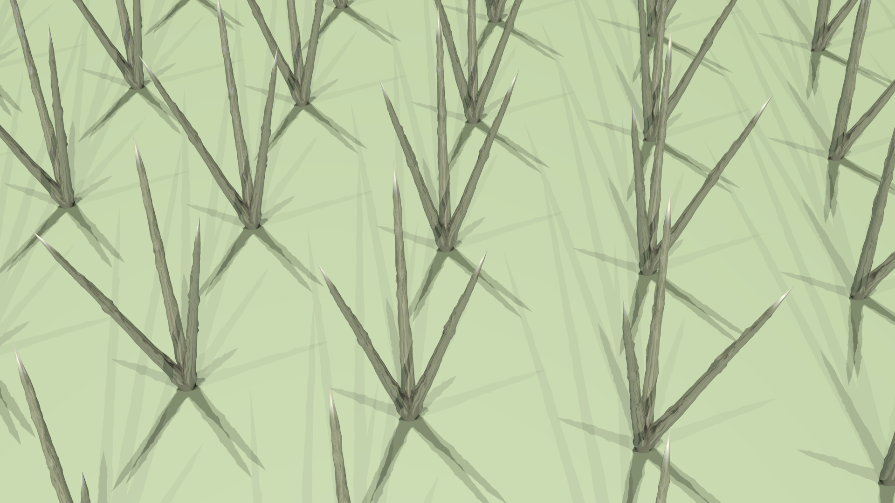

What is it?

Ecosystems worldwide are experiencing both drought and desertification. Confronted with these problems, they are searching for a solution. Many of these arid areas also experience heavy morning fog. The fog move through the area and by mid day is gone leaving the area still drought ridden. The Opuntia genus of cacti has specially designed spines to collect fog for their water supply. The dewpoint project is a series of panel with specially designed spine clusters inspired by the Opuntia’s spines to efficiently and sustainably harvest water from fog for human use.

Dewpoint panels can be easily installed on rooftops, walls, and poles. Each panel has a grid like array of spine clusters with bumps and vertical lacerations strategically arranged to encourage water condensation. Due to the change in diameter in its conical structure, water travels to the base, even when upside down, due to the capillary effect. The water is drawn down the cone to where the cone is connected to the panel where it is collected in an interior collection pipe system. The water can be store in a storage tank and used at a later time.
Dewpoint panels can be easily place in already existing architecture. Rooftops and exterior walls are underused surfaces in the home are are easy access points to install dewpoint and start collecting. Dewpoint can also tie into a home’s already existing water system with ease.
One of the best uses for the collected water is for lawn care and agricultural use. 41% of California’s water supply is devoted to agricultural irrigation. Using dewpoint draws less water from the municipal water system to water agriculture or one’s lawn. Filters can be added to the system so that the collected water can be filter to meet the United States’ drinking water requirements and be used in the home.

The current leader in fog collecting technology out now requires large plastic nets and a large amount of space. Increase use of this technology will lead to an increase of plastic net waste that often finds its way into the ocean and traps marine life and destroys reefs. Dewpoint require less space and is also made of recyclable materials that will leave less of a carbon footprint.
While designing dewpoint, the team wanted to refrain from using plastic because of its inability to be recycled practiDewpoint require less space and is also made of recyclable materials that will leave less of a carbon footprint.
Metal is not the most eco-friendly material but it is a highly valued material, recyclable, food safe, and long lasting. With any new technology the start up costs can be high but we predict over time the cost of manufacturing dewpoint panels will lower and make them a more accessible water collection system. Having the access to extra water should not excuse using water in excess. The dewpoint project encourages conserving water and using the resource wisely.